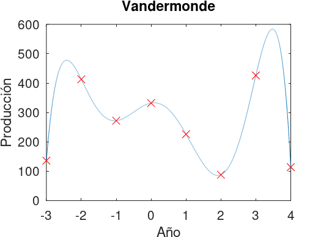
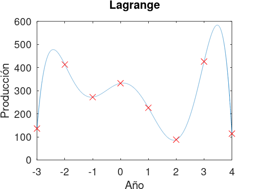
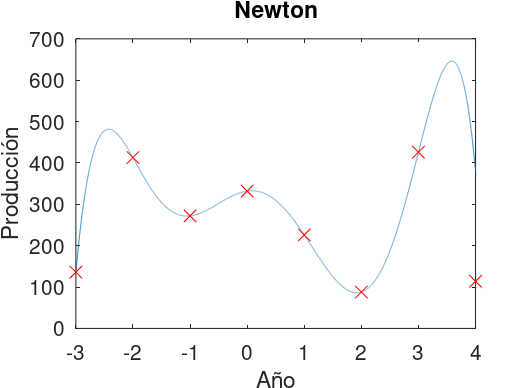

Interpolacion y regresion
Ignacio Sica
27/05/21
Es posible que sean utiles as funciones qr y polyval. No se pueden utilizar las funciones polyfit o vander.
Considere los datos del archivo datos.mat que describe la cantidad de elementos de una fabrica en los anos 2000 al 2007.
load datos.mat; X = linspace(-3, 4, 5000); x = x.-2003;
p = vandermonde(x,y); plot(X, polyval(p,X),x,y,'rx'); xlabel ("Año"); ylabel ("Producción"); title ("Vandermonde");
plot(X, lagrange(x,y,X),x,y,'rx'); xlabel ("Año"); ylabel ("Producción"); title ("Lagrange");
c = newton(x,y); plot(X, arrayfun(@(X) newton_aux(x,y,X,c), X),x,y,'rx'); xlabel ("Año"); ylabel ("Producción"); title ("Newton");
El polinomio resultante no se puede utilizar para predecir la produccion en el ano 2050. Este polinomio solamente sirve para interpolar los puntos en un entorno local con respecto a los puntos interpolados. En caso de que se intente predecir la produccion en el ano 2050, el resultado no tendria sentido ya que la curva, a medida que se aleja de la localidad de los puntos, tiende a infinito. Es mas, se puede notar esto a una escala mucho menor. Al estar trabajando con polinomios, todas las raices(reales o no)de los mismos se encuentran en la localdiad de de los puntos por lo que si uno se aleja de eso ya la funcion tiene a infinito.
Al igual que en el punto anterior, los polinomios obtenidos en esta parte no sirven para aproximar la produccion en un entorno que se encuentra alejado de la localidad de los puntos utilizados para interpolar. En caso de que se intente predecir la produccion en el ano 1980, el resultado no tendria sentido ya que la curva, a medida que se aleja de la localidad de los puntos, tiende a infinito.
En pocas palabras, el fenomeno de Runge explica que el aumentar el grado del polinomio cuando se hace una interpolacion lineal no necesariamente aumentara la precision sino que se generaran crestas y valles cada vez mas pronunciadas. Esto se da cuando los puntos se encuentran equidistantemente distribuidos. Este fenomeno si se presenta en el problema planteado ya que todos los puntos se encuentran equidistantemente separados el uno del otro. En las graficas se pueden observar estas crestas y valles.
A pesar de no haber podido terminar el codigo a tiempo para la entrega, a traves de teorico que estuve leyendo para la actividad y tambien los resultados que algunos compañeros compartieron durante la clase puedo sacar las siguientes conclusiones acerca de las aproximaciones. Primero es que, a diferencia de el ejercicio 1 donde se interpolaban los puntos, al simplemente aproximar las graficas resultantes no pasan exactamente por los datos de entrada, es decir, la curva del grafico "acompaña" a los puntos pero no llega a tocar. Tambien, se puede observar que el numero de condicion de la matriz resultante es mayor por lo que la precision y exactitud de los datos tambien es menor.
Eric Walter, Springer, Numerical Methods and Optimization
Richard Khoury & Douglas Wilhelm Harder, Springer Numerical Methods and Modelling for Engineering
Gauss–Seidel method, Wikipedia, (https://en.wikipedia.org/wiki/Gauss%E2%80%93Seidel_method)
Norm (mathematics), Wikipedia (https://en.wikipedia.org/wiki/Norm_(mathematics))
Javier Segura, Universidad de Cantabria, Introduccion al analisis numerico (https://personales.unican.es/segurajj/intro.pdf)
Errors for Linear Systems (http://terpconnect.umd.edu/~petersd/460/linsysterrn.pdf)
Inv Function (https://octave.sourceforge.io/octave/function/inv.html)
https://www.unioviedo.es/compnum/labs/PYTHON/Interpolation.html https://www.youtube.com/watch?v=Az2jhvu2i2I http://www.ugr.es/~mpasadas/ftp/Inter2.pdf
function p = vandermonde(x, y) x = x; y = y; [n,m] = size(x); A = ones(n,n); for (i = 1 : n) A(:, n-i+1) = x.^(i-1); end p = sem_plu(A, y); endfunction
function Y = lagrange(x, y, X) [n,m] = size(x); x = x; Y = 0; function_index = 1; while(function_index <= n) point_index = 1; numerator = 1; denominator = 1; while(point_index <= n) if(point_index != function_index) numerator = numerator .* (X - x(point_index)); denominator = denominator * (x(function_index) - x(point_index)); endif point_index = point_index + 1; endwhile Y = Y + (y(function_index) .* numerator ./ denominator); function_index = function_index + 1; endwhile endfunction
function c = newton (x, y) [n,m]= size(x); dd = zeros(n, n+1); dd(:,1) = x; dd(:,2) = y; column_index = 3; while(column_index <= (n + 1)) row_index = 1; while(row_index <= n - column_index + 2) dd(row_index, column_index) = (dd(row_index+1, column_index - 1) - dd(row_index, column_index - 1)) ... / (x(row_index + column_index - 2) - x(row_index)); row_index = row_index + 1; endwhile column_index = column_index + 1; endwhile c = dd(1,2:end); endfunction
function [P,L,U] = plu (M) n = size(M); P = eye(n); L = zeros(n); U = M; ColumnIndex = 1; while (ColumnIndex <= n - 1) ColumnVector = U(ColumnIndex:end, ColumnIndex); [max_value, IndexOfMaximum] = max(abs(ColumnVector)); IndexOfMaximum = IndexOfMaximum + ColumnIndex - 1; P([ColumnIndex IndexOfMaximum],:) = P([IndexOfMaximum ColumnIndex],:); L([ColumnIndex IndexOfMaximum],:) = L([IndexOfMaximum ColumnIndex],:); U([ColumnIndex IndexOfMaximum],:) = U([IndexOfMaximum ColumnIndex],:); RowIndex = ColumnIndex + 1; while (RowIndex <= n) s = (-1 * U(RowIndex, ColumnIndex)) / U(ColumnIndex, ColumnIndex); U(RowIndex, :) = U(RowIndex, :) + U(ColumnIndex, :) * s; L(RowIndex, ColumnIndex) = s * -1; RowIndex = RowIndex + 1; endwhile ColumnIndex = ColumnIndex + 1; endwhile L = L + eye(n); endfunction
function [x] = sem_plu(A, b) [P, L, U] = plu(A); [y] = SustitucionAdelante (L, P*b); [x, msg] = SustitucionAtras (U, y); endfunction
function [y,msg] = SustitucionAdelante (L, b) [mL,nL] = size(L); [mb,nb] = size(b); ## if mL ~= nL msg = 0; y = inf; disp('L no es cuadrada') return; # fin de la funcion elseif (mL ~= mb) || nb ~= 1 msg = 0; y = inf; disp('L y b son de dimensiones incompatibles') return; # fin de la funcion endif for ii=1:mL if abs(L(ii,ii)) < eps msg = 0; y = inf; disp('L tiene pivote menor que eps') return; # fin de la funcion endif endfor ## Inicio del algoritmo y = 0*b; if (L(1,1)==1) y(1) = b(1); else y(1) = b(1)/L(1,1); endif for ii=2:mL y(ii) = b(ii)-L(ii,1:ii-1)*y(1:ii-1); pivote = L(ii,ii); if (pivote ~=1) y(ii) = y(ii)/pivote; endif endfor msg = 1; % disp('Algoritmo finalizo normalmente'); endfunction